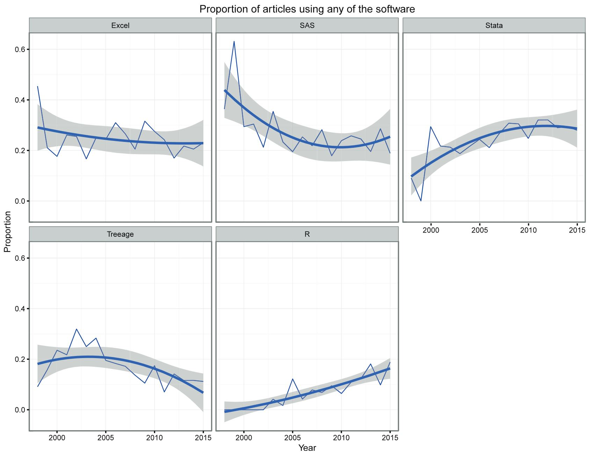
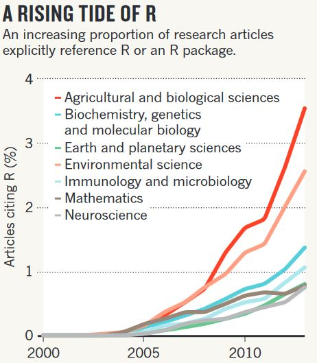
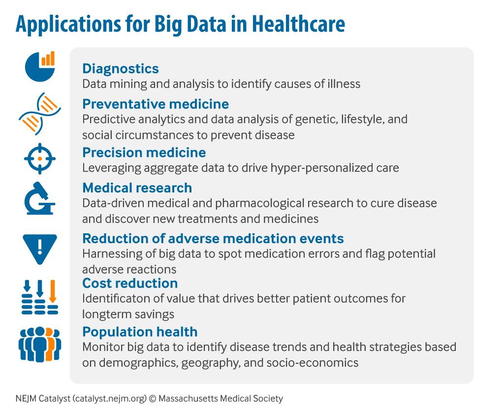
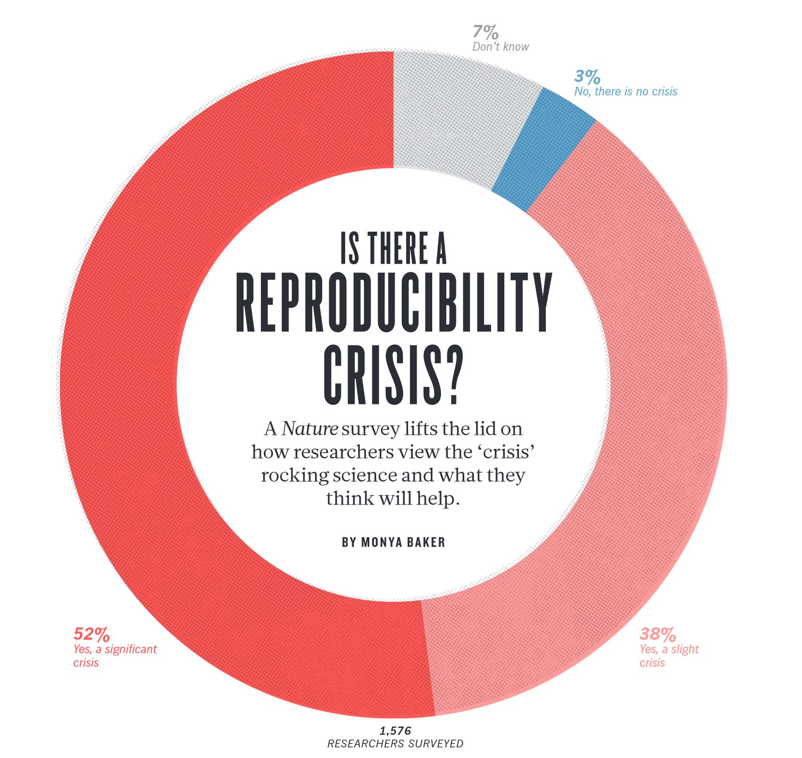
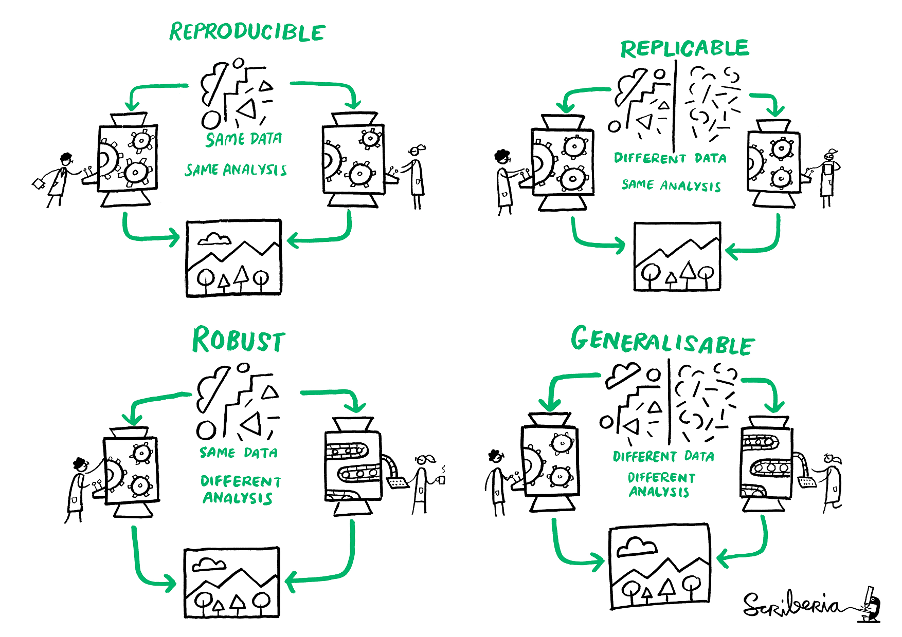
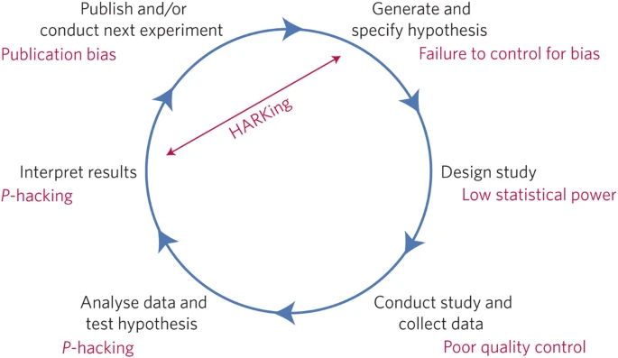

1 Basic Concepts
1.1 Introduction to R and RStudio

1.1.1 What is R?
Open source (free!) statistical programming language/software
It can be used for:
- Working with data - cleaning, wrangling and transforming
- Conducting analyses including advanced statistical methods
- Creating high-quality tables & figures
- Communicate research with R Markdown
It is constantly growing!
Has a strong online support community
Since it’s one programming language, it is versatile enough to take you from raw data to publishable research using free, reproducible code!

1.1.2 What is RStudio?
RStudio is a free, open source IDE (integrated development environment) for R. (You must install R before you can install RStudio.)
Its interface is organized so that the user can clearly view graphs, tables, R code, and output all at the same time.
It also offers an Import-Wizard-like feature that allows users to import CSV, Excel, SPSS (*.sav), and Stata (*.dta) files into R without having to write the code to do so.
1.1.3 R versus Others Softwares
Excel and SPSS are convenient for data entry, and for quickly manipulating rows and columns prior to statistical analysis. However, they are a poor choice for statistical analysis beyond the simplest descriptive statistics, or for more than a very few columns.

1.1.4 Why should you learn R
- R is becoming the “lingua franca” of data science
- Most widely used and it is rising in popularity
- R is also the tool of choice for data scientists at Microsoft, Google, Facebook, Amazon
- R’s popularity in academia is important because that creates a pool of talent that feeds industry.
- Learning the “skills of data science” is easiest in R

Some of the reasons for chosing R over others are are:
- Missing values are handled inconsistently, and sometimes incorrectly.
- Data organisation difficult.
- Analyses can only be done on one column at a time.
- Output is poorly organised.
- No record of how an analysis was accomplished.
- Some advanced analyses are impossible
1.2 Health Data Science
Health Data Science is an emerging discipline, combining mathematics, statistics, epidemiology and informatics.
R is widely used in the field of health data science and especially in healthcare industry domains like genetics, drug discovery, bioinformatics, vaccine reasearch, deep learning, epidemiology, public health, vaccine research, etc.

As data-generating technologies have proliferated throughout society and industry, leading hospitals are trying to ensure this data is harnessed to achieve the best outcomes for patients. These Internet of things (IoT) technologies include everything from sensors that monitor patient health and the condition of machines to wearables and patients’ mobile phones. All these comprise the “Big Data” in healthcare.
1.3 Reproducible Research
Research is considered to be reproducible when the exact results can be reproduced if given access to the original data, software, or code.
- The same results should be obtained under the same conditions
- It should be possible to recreate the same conditions
Reproducibility refers to the ability of a researcher to duplicate the results of a prior study using the same materials as were used by the original investigator. That is, a second researcher might use the same raw data to build the same analysis files and implement the same statistical analysis in an attempt to yield the same results. Reproducibility is a minimum necessary condition for a finding to be believable and informative.
— U.S. National Science Foundation (NSF) subcommittee on Replicability in Science
There are four key elements of reproducible research:
- data documentation
- data publication
- code publication
- output publication


Factors behind irreproducible research
- Not enough documentation on how experiment is conducted and data is generated
- Data used to generate original results unavailable
- Software used to generate original results unavailable
- Difficult to recreate software environment (libraries, versions) used to generate original results
- Difficult to rerun the computational steps

While reproducibility is the minimum requirement and can be solved with “good enough” computational practices, replicability/ robustness/ generalisability of scientific findings are an even greater concern involving research misconduct, questionable research practices (p-hacking, HARKing, cherry-picking), sloppy methods, and other conscious and unconscious biases.
What are the good practices of reproducible research?
How to make your work reproducible?
Reproducible workflows give you credibility!